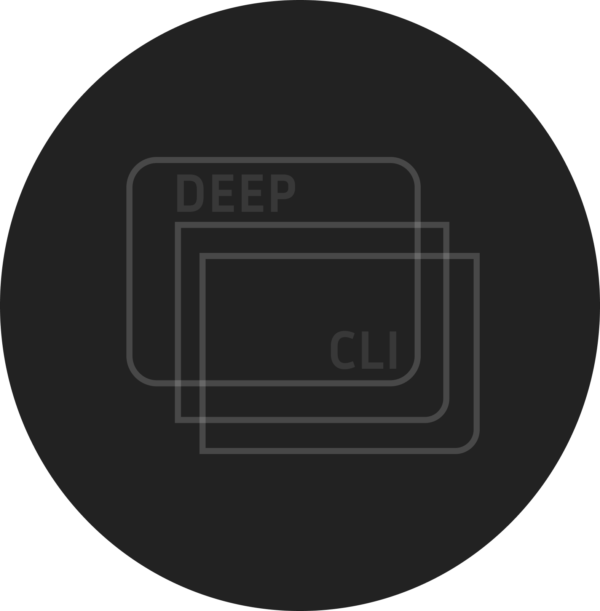

A simple AI agent that runs in the terminal.
Chat with AI, manage multiple agents, and keep context in projects—all from the command line. No browser, no extra apps. Just your terminal and your agents.